Градиентная
заливка представляет собой постепенный переход одного
цвета в другой на всей протяженности ее применения. GIMP
предоставляет богатый набор инструментов для создания,
редактирования и обработки градиентный заливок. Область
их применения очень велика, начиная от рисования,
заканчивая созданием сложных масок слоя.
Основным инструментом для заливки
градиентным переходом является инструмент, который так и
называется Заливка с градиентом цвета.
Применение градиентной
заливки происходит следующим образом. Выбрав инструмент
заливки градиентом, отметьте начальную точку, и не
отпуская клавишу мыши, тяните градиент в нужную сторону.
Градиентная заливка применится ко всему выделенному
диапазону или, если нет выделения, ко всему слою
изображения.
Заливка выделенного фрагмента и целого
изображения. При этом начало
перехода из одного цвета в другой начнется в первой и
закончится во второй точке заливки. По краям от этих
точек применится начальный и конечный цвет градиента.
Для примера, посмотрите на рисунок. В условно разбитом
на три части изображении к центральной части была
применена заливка градиентом из синего цвета в белый.
Т.е . начальная и конечная точки заливки располагались
на границах зон 1-2 и 2-3. Видно, что переход цвета
существует только в средней части, а части 1 и 3 имеют
"чистые" синий и белый цвета соответственно.
Начальная и конечная не
обязательно должны находиться в пределах изображения. Их
можно увести за его пределы. Правда, назначить начальную
точку за пределами изображения без предварительных мер
достаточно сложно. Сначала Вам необходимо растянуть
окно, чтобы появились пустые области и начинать заливку
с них.
Для данного
инструмента доступно множество различных параметров.
Диалоговое окно с параметрами вызывается двойным щелчком
по иконке градиентной заливки.
Первая группа параметров,
включающая в себя Непрозрачность и Режим,
действуют аналогично таким же параметрам в диалоге
слоев. Предположим, что Вы имеете два слоя: один с
изображением, а другой с заливкой. Манипуляция с
режимами слоя заливки даст такой же эффект, как если бы
Вы применили заливку с подобными параметрами прямо на
слой изображения. Подробнее о работе с режимами слоев
читайте здесь.
Следующая группа параметров
устанавливает "законы" заполнения заливок.
Параметр Смещение определяет положение
"среднего" цвета относительно центра заливки. При
значении 0 "средний" цвет оказывается ровно в центре
градиента. Чем больше это значение, тем больше смещается
<средний> цвет к конечной точке.
В параметре Бленда доступны следующие
варианты:
- Основной цвет в фоновый по RGB
-
Основной цвет в фоновый по HSV
- Основной цвет в
прозрачный
- Градиент
пользователя
Первые два определяют
закон по которому будет осуществляться переход основного
цвета в фоновый. Разница между заливкой по RGB и HSV
показана ниже на примере перехода из синего цвета в
белый.
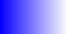 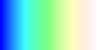
Третий устанавливает вместо
цвета фона прозрачный. Четвертый позволяет использовать
градиенты пользователя о которых мы поговорим потом.
Следующий параметр Градиент устанавливает тип
заливки.
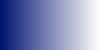 |
Линейный |
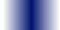 |
Билинейный |
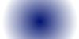 |
Радиальный |
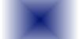 |
Квадратный |
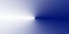 |
Конический симметричный |
| |
Конический ассиметричный |
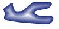 |
По форме угловой |
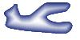 |
По форме сферический |
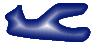 |
По форме ямочкой |
| |
Спиральный по часовой |
| |
Спиральный против
часовой |
Некоторые из градиентов, такие как Билинейный или
Радиальный, работают зеркально, относительно
начальной точки, поэтому в примерах применялись от
центра изображения к краю. Так же на небольших примерах
не очень хорошо заметна разница между заливками "по
форме", однако на больших изображениях разница между
ними должна быть весьма заметна.
Параметр Повтор работает для линейного,
билинейного, радиального, квадратного и конического
градиентов. Сразу хочу оговориться, что для конических
градиентов, лично мне не удалось добиться какого-либо
эффекта. Если Вы использовали градиент только для части
изображения, то при включенном параметре Повтор,
GIMP автоматически заполнит оставшуюся часть изображения
повтором этого же градиента. Причем заполнять можно
двумя способами: повторяя градиент (Пилообразная волна)
и создавая зеркальное изображение (Треугольная волна).
|
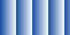 |
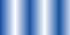 |
| Без повторения |
Пилообразная волна |
Треугольная
волна |
Для чего предназначена третья группа параметров,
включающая кнопочкой Адаптивная интерполяция я
так и не смог установить. Думаю это что-то связанное с
обсчетом перехода одного цвета в другой. Единственное
что мне удалось заметить, это то, что при больших
значениях параметра максимальная глубина GIMP
задумывался на очень долгое время. При этом разницы
между обычным градиентом и "адаптивно интерполированным"
мой глаз замечать отказался. Но если кто-нибудь
популярно мне объяснит что это, я буду очень благодарен.
Теперь самое время обратиться к
градиентам пользователя. Текущий пользовательский
градиент отображается в главном окне GIMP. Щелчком по
этому градиенту вызывается диалог градиентов.
GIMP предлагает на выбор большое
количество различных готовых градиентов, которые можно
выбрать из списка. Некоторые из этих градиентов я
использовал в примерах. Например в примере имитации огня
использовался градиент German Flag Smooth, а в примере
создания карты Land 1.
Однако,
самое интересное - это то, что GIMP позволяет
редактировать эти градиенты, а так же создавать свои.
Для этого в диалоговом окне градиентов существует кнопка
Правка, которая вызывает редактор градиентов.
Кнопки справа говорят сами за
себя: Новый градиент, Скопировать
градиент, Удалить градиент, Переименовать
градиент, Сохранить как POV-Ray файл.
Собственно что на них написано, то они и делают. Слева
список доступных для редактирования градиентов. С
кнопками масштаба вроде бы тоже все понятно, они
позволяют увеличивать и уменьшать редактируемый
градиент, который находится внизу. Кнопка
Масштабировать все устанавливает масштаб 1:1.
Рассмотрим создание нового
градиента. Создав градиент под названием test, мы
получили стандартный градиент с переходом из черного
цвета в белый. По обоим краям градиента есть черные
стрелки. Они обозначают границы сегмента. Белая стрелка
обозначает положение "среднего" цвета.
Нажатием правой
клавиши мыши на градиенте можно вызвать меню
редактирования:
С помощью пунктов Расщепить в
средней точке и
Расщепить на равные части
можно разделить сегмент на несколько частей и работать с
каждой в отдельности. Расщепим сегмент в средней точке.
Теперь у нас есть два отдельных сегмента. Выбрать нужный
можно путем клика по полоски со стрелками. Полоска
выделенного сегмента будет более темная.
Так же можно легко
перемещать границу между двумя сегментами (черные
стрелки) и "средние" точки (белые стрелки). Чтобы задать
нужный цвет для градиента, воспользуйтесь тем же самым
всплывающем меню. Выделите необходимый сегмент, и в меню
выберите Изменение цвета для крайней левой или
правой точки. Цвет можно сохранять и загружать. Кроме
того, можно загружать цвет из крайней точки соседнего
сегмента, что полезно при создании плавных градиентов.
При задании цвета параметр Плотность обозначает
степень непрозрачности. На примере внизу я задал цвет
крайней левой точки первого сегмента синим, крайней
правой точки - черным. Для второго сегмента я задал цвет
крайней левой точки равным соседней к ней точке первого
сегмента (черный), а правую точку сделал прозрачной.
Если перемещать курсор по
изображению градиента, то можно заметить, что внизу
отображаются значения цвета для данной точки и ее
прозрачность.
Cпомощью всплывающего
меню можно так же разбить сегмент на несколько равных
частей, размножить его и отзеркалить. Подобным образом,
разбивая сегменты на части, перемещая их и меняя цвета
можно создавать градиенты абсолютно любой сложности.
Возникает вопрос, а где все эти
градиенты применять? Да абсолютно везде. Лично меня они
выручают очень часто. Чаще всего я использую градиентную
заливку для создания фона изображения, гораздо лучше
когда он не одноцветный, а с переливом. Кроме того,
градиенты можно использовать для рисования различных
объектов: труб, шаров и т.п., для создания имитации
затемнения. Сложные градиенты дают очень неплохие
эффекты при использовании фильтра Отображение
градиента ( см.
пример создания карты ). Так же градиент можно
применять для заливки
маски слоя , чтобы получать полупрозрачные
изображения. В общем, применений море, а эффектов еще
больше. Главное - больше экспериментов. :)
(с) Алексей Селезнев
|